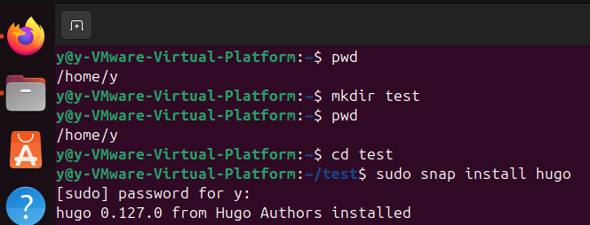

What is a Static Site Generator?
A SSG is a software tool that is used to create websites. They create HTML, CSS and Javascript files that are necessary to create a site, using markdown and a set of templates. The use of a Static Site Generator automates the task of coding individual HTML pages. The site is rendered on the server side, and makes static sites faster than dynamic sites. SSGs are an alternative to CMS (Content Management Systems). They hold differing abilities of functionality, ease, security, and speed.
A rundown of markdown
Markdown is a key component of Static Site Generators. Markdown uses special characters to describe page stylings, which the SSG can convert into HTML. Markdown is also widely used elsewhere on the web, such as in forum posts and Reddit comments.
Markdown converts 1 to 1 with HTML semantics. This allows the Static Site Generator to quickly convert any markdown files into an HTML page. Due to this 1 to 1 conversion, it is also possible for the SSG to apply CSS stylings directly to the markdown.
The following is an incomplete list of markdown - HTML conversions.
| Markdown | HTML |
|---|---|
| # | <h1> |
| ## | <h2> |
| ** | <strong> |
| * | <em> |
| ` | <code> |
You can find a full list of markdown tags on their site: markdown guide
Common Uses for Static Site Generators
Since Static Site Generators are static, there are admittedly a fairly narrow range of use cases. However, the use cases that do exist are pretty widespread. The most common form of SSG generated websites are documentation. Especially as software developers, this is something we will have seen. This sort of documentation usually provides API information, as well as FAQs, tutorials, and other learning resources. Documentation like this is also very common to find internally in medium to large companies, documenting all the inner workings of their various tools and products.
A number of sites that could have been created with an SSG:
Why Use a Static Site Generator?
You can make the custom template structure or use one provided by the site's generator and then you enter the information that you want to be formatted by the static generator. This allows you to streamline the process of creating multiple pages with the same template. The documents and content gets organized by the structure laid out and creates a library of documentation that can be easily accessed. The content can be quickly maintained by changing the markdown pages that will target all the pages instead of having to change every single page manually with CSS. Changing one single page is not time consuming, however if you need to change 100 pages then this has an obvious disadvantage to the developers time.

Static Site Generator vs Dynamic/CMS
| Static Site Generators | Dynamic/CMS | |
|---|---|---|
| Efficiency | High | Low |
| Security Risks | None | Some |
| Ease of Use | Experience Required | Minimal Experience |
| Functionality | Basic | Flexible |
There is a significant difference between static and dynamic sites in load speed. Static sites pre compiled, and are very efficient. Dynamic sites are lower in efficiency as the site needs to compile information at load time. As a static site is, simply put, static, it has fewer security risks.
Dynamic sites are vulnerable due to their complex back ends and a higher level of user interaction. Static sites are built with minimal back end work which keeps the level of security high compare to a dynamic site which has more of a complex back-end work that will allow more vulnerabilities to the site's security.
Static Site Generators have files that are pre built that do not take in user input. SSGs can be tricky as they require some developer knowledge. Using Static Site Generators requires some developer knowledge because of its use of markdown which can cause some difficulties for a person with no front-end developer experience.
With a dynamic site such as Wordpress, the user can buy a site and start blogging rather easily. When using a SSG, functionality is very limited. They create basic sites for Wikipedia type information, and do not have a very wide breadth of abilities. When using a dynamic site, there is the ability to integrate shops, dynamic elements, user comments, forms and more.
Pros
There are quite a few pros to using a static site instead of a dynamiic site. It all depends on if the pros of using a Static Site Generator outweighs the cons, and if a static site fits your needs. SSGs are lightweight and fast. There are no special requirements for hosting. The information is pre-compiled so therefore the site is much faster than dynamic sites.
A static site is inherently secure. This is useful because there is no backend for malicious users to exploit.
Costs are kept low, since there is no need for large server processing or live monitoring.
There is a good flexibility in styles, as you are able to build your own styles and templates.
As much is done by the SSG, people can focus on creating content, instead of coding. This increases productivity and the ability to quickly get your information online.
Cons
A static site is information based and there is no user interaction capabilities. To change designs and styling needs, it needs to be done with markdown files which can be challenging for a user with little knowledge. A static site cannot gather real time information to adapt to the user such as locations and languages. For example, users from other countries will get the same version of information. The site cannot be changed into a different language or be modified for the users preferences. The information can only be displayed in the language it was created in, therefore limiting the amount of users visiting the site. Static sites cannot have e-commerce or live feed features. For a site to take user input and digest that information requires a site to become dynamic and would require more extensive backend work.
What are the Most Popular SSGs?
Some popular Static Site Generators are Hexo, Gatsby, Next.js, Nuxt.js, and Hugo. We will demonstrate the demo using Hugo later. Hugo is written in Go and is optimized for speed, easy use and configurability. It relies on Markdown files with front matter for meta data. It is good for working with many kinds of websites including blogs, display sites, etc.
Process for Generating a Site
1. Install SSG
Hugo website: https://gohugo.io/
https://gohugo.io/installation/linux/
Package Managers
Snap is a free and open-source package manager for Linux. Available for most distributions, snap packages are simple to install and are automatically updated. The Hugo snap package is strictly confined. This snap package runs in complete isolation, up to a minimal access level that's deemed always safe. The sites you create and build must be located within your home directory, or on removable media.
To install the extended edition of Hugo:
sudo snap install Hugo

2. Choose a Theme
Theme: https://themes.gohugo.io/themes/lightbi-hugo/
3. Create a Site
Hugo new site (name of site) For example: My new site name is 'testing'.
Sudo apt-get and install Git, and then Git init

Clone the Lighbi theme into the themes directory, adding it to your project as a Git submodule.

Append a line to the site configuration file, indicating the current theme. Then start Hugo's development server to view the site.

4. Create Content

Now we have our posts, we can edit content now. This is a demo for adding a cat picture using markdown.
5. Generate website
local url: http://localhost:1313/